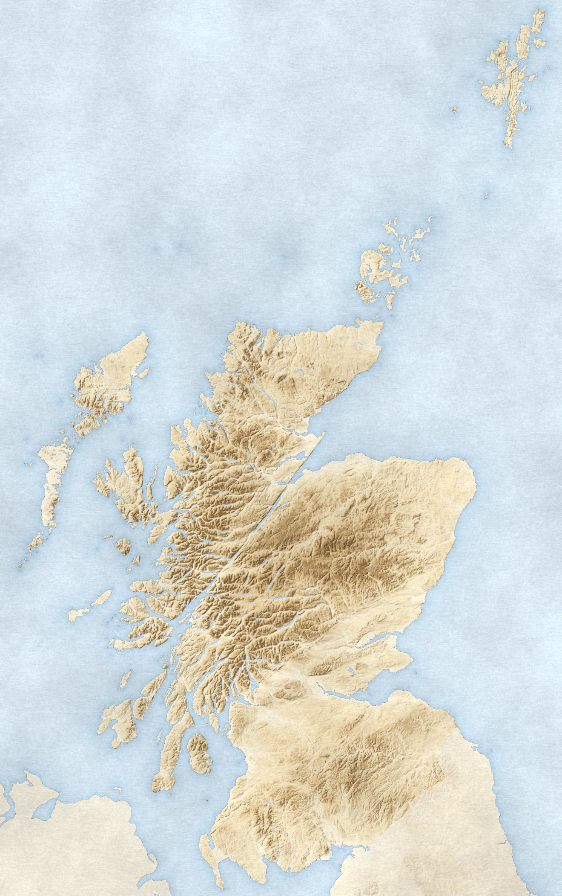

No gauge on this water, or no reading
Levels. SEPA time series service (KiWIS). The 30-day view is 15-minute river stage for every gauge reporting in the last three days, sampled hourly. The five-year view is SEPA's daily mean stage. Snapshot taken . The page holds a saved snapshot and does not refresh itself.
Five-year record. Each gauge is placed on its own scale from SEPA daily series, November 2021 to November 2026: the 1st percentile of daily mean level reads 0.00, the median 0.32, the 90th percentile 0.62, the 99th percentile 0.84, and the highest daily maximum 1.00. The gauges themselves go back further: the oldest to 1920, half of them to 1990 or earlier.
West to east strip. Gauges are ordered by easting and split into 22 rows of about 16; each cell is the row's mean level.
Sound. Synthesised in the browser. Intensity is the mean level of all gauges on the current scale, from 0.20 (silent arpeggio, dark pad) to 0.70 (full). The arpeggio's eight positions are eight groups of gauges from west to east, on a D minor pentatonic scale. It follows the map, so it fades out when playback pauses.
Rivers. OS Open Rivers watercourse links draining at least 7 km of network, 18,400 km in all. Gauges are snapped to the nearest link within 350 m (342 of 348 snap; the median distance is 13 m). A link takes the first gauge found downstream; between two gauges on one stem it blends them by distance. This is interpolation for display, not a hydraulic model: an ungauged tributary shows the level of the gauge below it.
Relief. OS Terrain 50 at 100 m, lit from four directions and tinted by height. England and Ireland are shown pale, outlines from Natural Earth.
Contains SEPA data © Scottish Environment Protection Agency and database right 2026. Contains OS data © Crown copyright and database right 2026. Made with Natural Earth.